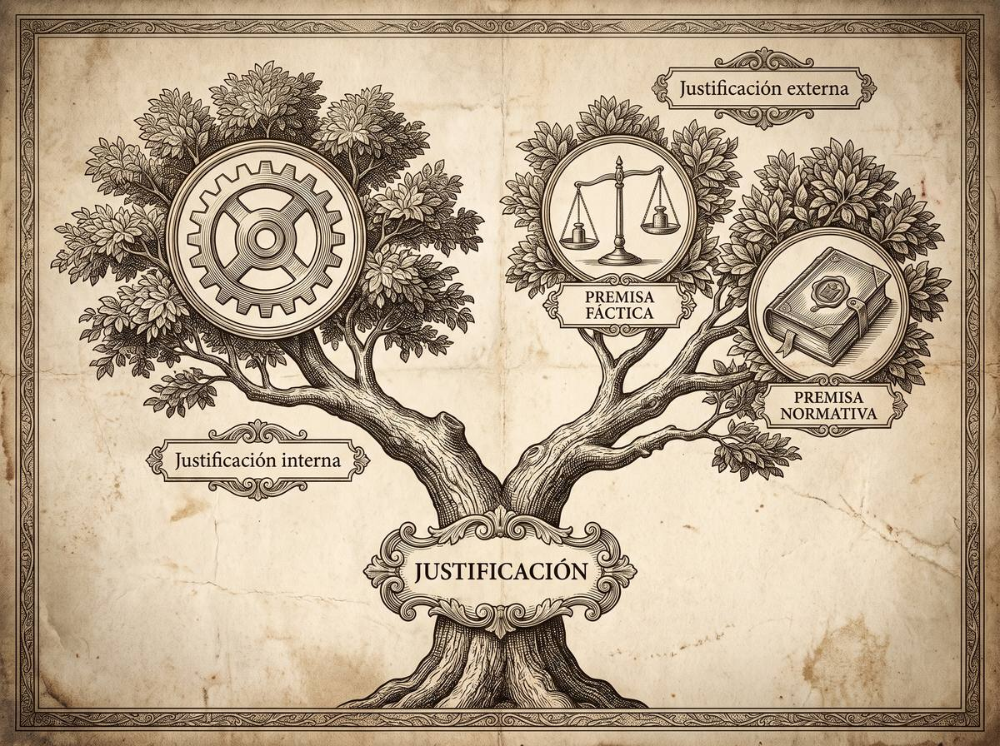

Subpunto 1.1.4.1 · El giro práctico y la argumentación jurídica
Por qué ya no basta con citar el artículo
Durante mucho tiempo se enseñó que el juez aplica la ley y poco más. Esa idea ha caído. Hoy se entiende el derecho como una práctica argumentativa, y eso cambia lo que se le exige a una sentencia: no que invoque normas, sino que justifique por qué esas y no otras. Este apartado explica la distinción que sostiene todo lo demás — la que separa explicar de justificar.
Prof. Carlos Eduardo Chica-Villacís Docente autor · Universidad Católica de Cuenca
Quien empieza Derecho suele concebir el ordenamiento como un conjunto estático de leyes que el juez aplica de forma casi automática. Esa visión tiene nombre: formalismo jurídico, la escuela que reduce la tarea del jurista a interpretar la ley de manera literal y mecánica, asumiendo que el ordenamiento es un sistema cerrado y sin lagunas. Está superada.
Lo que la sustituye es el giro argumentativo, también llamado giro práctico: el paso de una concepción estática del derecho —centrada en la estructura de la norma— a una concepción dinámica, donde el derecho se entiende como una práctica social compleja y una actividad esencialmente argumentativa. Bajo este paradigma, el derecho no es un conjunto de enunciados listos para aplicarse, sino un proceso de deliberación, interpretación y justificación.
Cárdenas Gracia señala cinco factores que lo provocaron. Los códigos envejecen más rápido que la realidad que regulan, y dejan lagunas que la ley no previó. El derecho real presenta antinomias —normas que se contradicen— y alguien tiene que elegir de manera fundada cuál prevalece. La ley estatal perdió el monopolio de la producción jurídica: hoy convive con tratados internacionales y principios constitucionales. Detrás de cada enunciado legislativo laten valores y fines que el aplicador debe ponderar para no llegar a resultados absurdos. Y la interpretación no es pasiva: es una actividad donde el intérprete actualiza el texto para el caso concreto.
El Manual del TEPJF añade el factor institucional: la consolidación del Estado constitucional de derecho, donde la Constitución es norma suprema y todo poder está limitado por los derechos fundamentales. En una democracia deliberativa los jueces no derivan su legitimidad de las urnas, sino de la calidad racional de sus motivaciones. Por eso la argumentación no es un adorno retórico: es lo que impide el abuso de poder.
Apartado elaborado a partir de Cárdenas Gracia (2010) y el Manual de argumentación jurídica del TEPJF (2024).Este es el núcleo del subpunto. Ferrer Beltrán advierte que la palabra motivación arrastra una ambigüedad peligrosa, porque se usa para dos cosas incompatibles.
Explicar es describir los factores causales que empujaron al juzgador: sus prejuicios, su ideología, su contexto social, su estado de ánimo. Es un discurso descriptivo y, como tal, puede ser verdadero o falso. Pero no tiene fuerza justificatoria.
Justificar es ofrecer un discurso normativo, compuesto por razones que fundamenten la corrección de la decisión. Ferrer Beltrán separa aquí dos cosas que suelen confundirse: tener razones, que es el proceso mental de poseer fundamentos, y dar razones, que es plasmarlas por escrito en la sentencia. La obligación constitucional de motivar exige lo segundo, y es lo único que permite controlar la arbitrariedad. Un juez puede tener excelentes razones y aun así dictar una sentencia inmotivada.

Es la corrección lógica del razonamiento. El fallo está justificado internamente si se deriva de manera deductiva de las premisas que la propia sentencia formula: el clásico silogismo judicial, subsumir el hecho probado en el supuesto de la norma. Pero es insuficiente, y aquí está la trampa: un razonamiento puede ser lógicamente impecable y partir de premisas falsas o de leyes inválidas. La lógica no salva del error.
Es la solidez de las premisas mismas, y exige cosas distintas según el tipo.
A las premisas fácticas se les exige verdad. Como el juez no alcanza certezas absolutas, Ferrer Beltrán precisa el criterio: la premisa está justificada si corresponde a la hipótesis con mayor probabilidad inductiva a la luz de las pruebas disponibles, superando el estándar de prueba aplicable.
A las premisas normativas no se les puede exigir verdad, porque las normas no son verdaderas ni falsas. Se les exige aplicabilidad: una norma es aplicable cuando el ordenamiento impone al juez el deber de resolver con ella, al margen de que sea formalmente válida. Es lo que ocurre con normas derogadas que deben aplicarse de forma ultractiva, o con derecho extranjero.
Romero Martínez ofrece un mapa de las teorías que han diseñado esquemas para fiscalizar la corrección de las decisiones judiciales. No compiten exactamente: miran el mismo problema desde ángulos distintos.
| Teoría y autor | Criterio central de corrección |
|---|---|
| Justificación de segundo orden MacCormick |
Test de relevancia. La decisión es correcta si es consistente —no contradice normas válidas—, coherente —compatible con los principios constitucionales— y viable en su argumento consecuencialista, es decir, si proyecta efectos aceptables para las partes y la sociedad. |
| Discurso racional y principios Alexy |
Principio de proporcionalidad. Toda decisión que limite derechos fundamentales se somete a tres exámenes: idoneidad —perseguir un fin legítimo con un medio adecuado—, necesidad —elegir la medida menos lesiva— y proporcionalidad en sentido estricto, la ley de ponderación. |
| Pragmadialéctica Van Eemeren y Grootendorst |
Resolución crítica de disputas. La argumentación es un intercambio regulado por un código de diez reglas racionales, donde las partes exponen sus premisas de forma clara, simétrica e imparcial para superar una diferencia de opiniones. |
| Argumentación integral Atienza |
Corrección material y moral. Evalúa desde tres dimensiones —formal, material y pragmática—, asumiendo que justificar una sentencia exige integrar un código moral racionalmente justificado en la Constitución, que proteja la dignidad humana. |
Atienza propone seis criterios para determinar si una argumentación judicial es correcta. No son alternativos: se aplican juntos.
Requisito formal de justicia: el criterio con que se construye la premisa normativa —la ratio decidendi— no puede ser hecho a medida del caso. El juez debe estar dispuesto a aplicar esa misma regla a cualquier otro caso idéntico en lo relevante. Si no lo está, no está juzgando: está resolviendo.
Va más allá de la simple consistencia, que es no contradecirse. Exige que la decisión encaje armónicamente en el sistema. Se desdobla en coherencia normativa —compatibilidad con los principios y valores constitucionales— y coherencia narrativa: en cuestiones de hecho, la hipótesis probada debe encajar con las leyes de la naturaleza y la experiencia acumulada.
Evaluar la decisión mirando hacia adelante. El argumento consecuencialista analiza qué repercusiones tendrá la sentencia sobre los destinatarios y sobre la sociedad.
Apelación a las convenciones éticas y valores mayoritarios de una comunidad en un momento dado. Hace la sentencia más persuasiva y refuerza la legitimación del juzgador.
Y aquí Atienza pone el freno: la moral social establecida puede ser opresiva o contraria a los derechos fundamentales. El criterio definitivo no es lo que la comunidad cree, sino la moral críticamente justificada, apoyada en teorías éticas procedimentales —Rawls, Habermas, Nino—, donde lo correcto es aquello que se acordaría mediante consenso racional libre de coacciones.
El criterio de cierre. Se aplica cuando los propios criterios entran en conflicto, o cuando hay dos interpretaciones igualmente defendibles: los llamados casos difíciles. Decidir razonablemente es alcanzar el mejor equilibrio posible entre exigencias institucionales y morales.
Apartado elaborado a partir de Atienza (2011).Porque permite distinguir dos cosas que desde fuera se parecen.
La sentencia articulera transcribe y enumera artículos de forma mecánica, dando por hecho que las palabras de la ley tienen un significado claro y único. Ignora lo que se llama la textura abierta del lenguaje —la vaguedad que afecta a toda norma general— y reduce el derecho a un silogismo. Le falta justificación externa: no explica por qué eligió esas premisas ni por qué son aplicables al caso.
La sentencia bien fundamentada asume que el derecho se compone de reglas, pero también de principios y valores. No se conforma con la lógica formal: somete sus propias premisas a escrutinio, explicando por qué tiene por probados esos hechos y por qué esa norma es la aplicable.
Apartado elaborado a partir de Ferrer Beltrán (2011) y Atienza (2011).«Las convenciones sociales mayoritarias de nuestra tradicional comunidad de provincia consideran que los jóvenes menores de veintiún años carecen de la madurez necesaria para administrar patrimonios elevados.»
Con esa fundamentación, un juez priva a un heredero de diecinueve años de administrar su herencia. Incumple al menos tres criterios de Atienza. ¿Cuáles?
Desde el aula
«Quiero que se queden con una sola distinción de todo este apartado, porque es la que van a usar el resto de la carrera: explicar no es justificar.
Cuando lean una sentencia, háganse esta pregunta: ¿el juez me está contando por qué decidió, o me está dando razones para aceptar que decidió bien? Son cosas distintas. «Se resuelve así en atención a las circunstancias del caso y a la sana crítica» no es una razón: es una explicación vacía disfrazada de fundamento. Si al leerlo no pueden reconstruir el argumento, es que no lo hay.
Y una advertencia práctica. Cuando les toque redactar —en la clínica, en el consultorio, en su primer trabajo— van a sentir la tentación de acumular artículos, porque llena página y parece riguroso. Resistan. Un escrito con tres normas bien justificadas gana a uno con treinta enumeradas. La otra parte también sabe citar; lo que no todo el mundo sabe hacer es sostener por qué su premisa es mejor que la contraria.»